Welcome to KHN5, a constantly evolving land of creativity, fueled by the sluggishness of Bedrock Dedicated Servers and powered by blazing-fast internet connectivity.
Come with us on a journey to this world as we commemorate its first year as a server.
P.S: Download links for all the images in this site down at the bottom.
The place where it all started. Every brave adventurer begins their journey on the vast land of KHN by dropping hereon. Shortly upon the launch of the world as a server, its founders built a small shrine on this spot to not only mark the beginning of the world but also welcome its first visitors. Exactly one year later, a second floor was added to commemorate this passing of time.
Future plans include the vertical expansion of the memorial with the addition of new floors for every year passed.
Type: Memorial. First built: Jan. 29, 2020. Material: Wood. Current height: 10 blocks.
TRIVIA Despite being conceptualized early on, it was eventually built the day the world launched as a server. Because procrastination.
KHNochori
In true KHN tradition, the two founders discovered a village, fortified it and settled nearby. While it may not be the first village they found (this title goes to the appropriately-named Protochori), it was the most fitting of the area to settle around. The population of the village, unable to defend itself even within the impenetratable walls, soon perished. It was replaced months later when foreign townsmen were relocated to the area and bred with one another by the serverians. To protect them from their own careleesness they were locked inside their residencies. The village thereupon underwent a visual upgrade, which is continuing to this day, with special care taken to preserve its original structures.
Future plans for the town include the completion of its visual upgrade and the construction of new buildings beneath, above and around the area.
Type: Village. Population: little I dunno, number of churches: 2
TRIVIA Even the wall is a replica of the same fortification that would be done in previous KHNs, with minor improvements.
Purpleshep/MJ Mansion
During its infancy, KHN5 saw the settlement of its two founders next to KHNochori. They began building their home, a spacious two-story mansion with each floor available to each founding member. Construction of the house lasted several months and underwent a few revisions, most notable being the replacement of cobblestone with stone bricks early into the process, the renovation of both floors in July, 2020 and the upgrade of the garden in Nov. 2020. An attic and an underground chestroom were added as storage systems for both dwellers, with other additions including a brewing room and a conduit-equipped swimming pool.
The design and initial cobblestone material of the house were both based on the same building carried on through the KHNs with minor upgrades conducted per iteration. The last, however, would be the greatest upgrade done to this building.
Future plans include the construction of an underground aquarium, the completion of the basement and villager trading hall as well as further visual upgrades to the building and the garden.
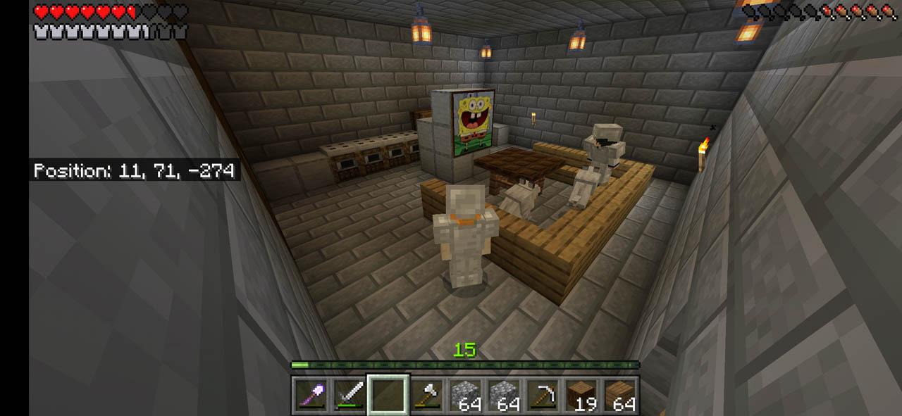
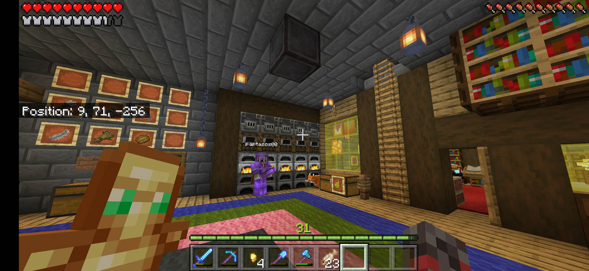
Type: Mansion. Height: 21 blocks Built: from 2019 to 2020.
TRIVIA During the renovation of the building, designs were laid out for a fully automatic super smelter in the kitchen. However, due to size constraints, the "fully" automatic part was dropped from the plan.
Portal & Version Number
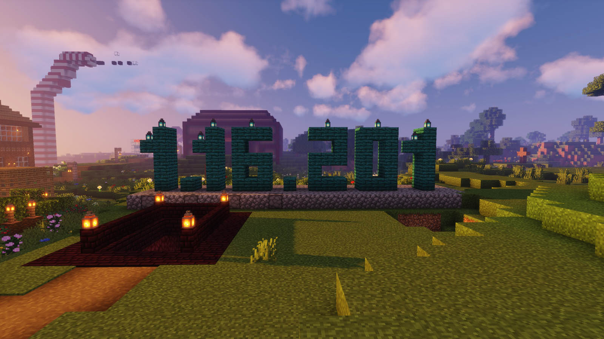
Atop a low hill beside the house, an open staircase leads to the gates to the dimension beneath. The portal was used sparingly before being sealed, only to be opened when the Nether received its grandest overhaul in history. Behind the stairs was erected a version number indicator, continuously updating along with the game.
The only future plan for now is to keep the version number always up-to-date.
TRIVIA On the day of the Nether Update launch, a flint and steel with only one use left was placed on an item frame to ignite the portal. However, Bedrock Edition doesn't feature advanced tooltips, so the item actually had 2 uses left.
Simoa's Sandstone House
Small but exquisite, this carefully-designed architectural gem was built on the eastern shore of the Lake of Con, right above the spot where lava boiled from the bowels of the earth. Bedrock Edition's excellence in development forced the slime launchers inside the house to be replaced by bubble column elevators. The top of the building features an entrance to the other world while the house is surrounded by an array of cakes, historically known as the "Wall of Unending Pain" and originally consisting of sweet berry bushes.
For future plans, please call the resident of the house. You can find his phone number on the Conelius Yellow Pages.
Type: House. Material: Sandstone. Height: 15 blocks. Built: Early 2020.
TRIVIA As of writing this, the maps on the topmost floor of the house are the biggest in the server, covering an area far beyond the oceans.
Simoa's Gunpowder Store
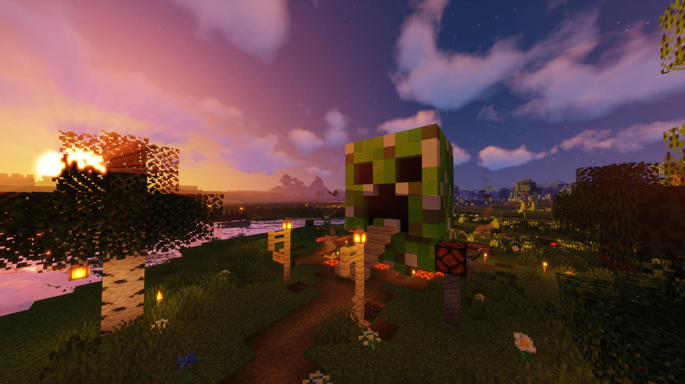
Right nearby his house, Sir Simoa conducts his business on the creeper-face-shaped gunpowder store he erected. A wooden staircase leads you inside this head, into a dark room surrounded by concrete. There you'll be presented with a single chest, described by travelers as an optical illusion from the way it reflects light despite the room being dark. The chest contains the precious goods that the customer came for and can be purchased in exchange for diamonds.
As future plans, Simoa has voiced his intention of expanding his business with more shops. We shall have to wait and see that.
TRIVIA When stock shortages hit the shopkeeper in late 2020, leaves grew on the eyes of the creeper. They were later cleaned as the shop was restocked.
Protochori & Undertale Pixel Arts
As its name suggests, Protochori was the first village to have ever been discovered in KHN5. The world founders noticed it mere moments after creating this world and visited it to greet the locals. It's built on an unusually steep hill, a terrain deemed not helpful for the construction of their mansion. It did, however, aid Simoa in constructing a Sans pixel-art on the side of this aforementioned hill. An imposing statue of Frisk from the same game was also built by MJ outside the now-abandoned village.
Plans for the area are being discussed, although an Undertale-themed location seems like the safest bet.
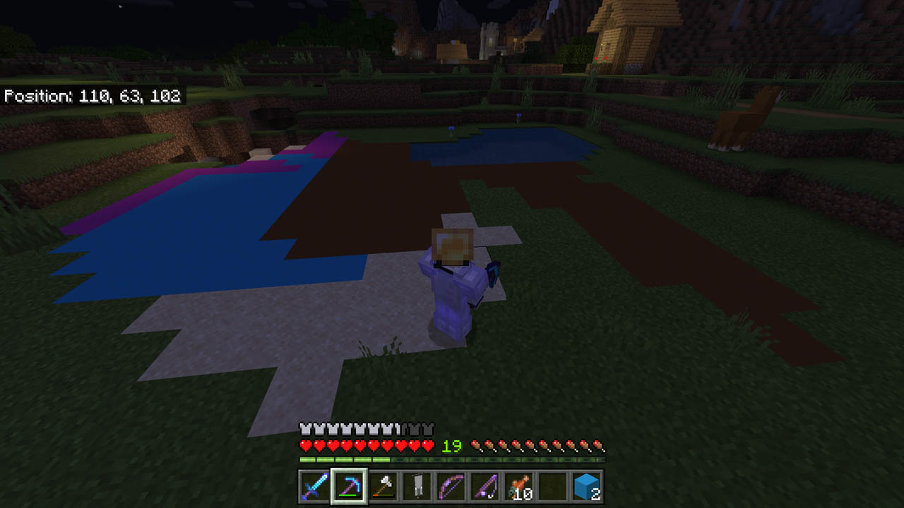
Type: Village. Population: Abandoned.
TRIVIA It was alternatively known as "KHNarchi", before the name "Protochori" was agreed upon.
Overworld Subway
The idea for a railway transportation system in past KHNs has been prominent. This, however, was the first time it was accomplished. A central train station, guarded by a snow golem, was built next to KHNochori in March, 2020 and on the southwest, the first stop to Bill's then-house opened soon after. Due to the mechanics of the game, other means of transportation would eventually be preferred, thus leading to the abandonment of the incomplete subway. A revision of the plan in late 2020 marked the relocation of the entirety of the tracks to the Nether as originally considered albeit not originally possible owning to the upcoming Nether Update. Their construction is currently pending. At the same time, the central station would also see a visual renovation with stone bricks being replaced by quartz. The original railway has been left intact for historical purposes.
Obviously enough, the plan is to construct the railway and reach all the significant locations in the game.
Type: transportation system. Current state: Under Relocation
TRIVIA This subway will be covering thousands of blocks before the Thessaloniki Metro even opens
Bill's Castle
Emperor Bill Cashman Pecunian IV was once a simple man like us. With the help of his fellow serverians he built a humble abode out of wood with a small tower next to it. However, his vision was grand. For several nights the men of the server gathered to lay the blueprints for an immense upgrade to his residency: its complete reconstruction as a castle. When that time came, Conelius'(s) shop was ready to supply the needed blackstone and basalt for the task. As we enter the second season of the server, construction for this castle is still undergoing.
Future plans include a moat around the castle and an entire medieval town in the surrounding area.
TRIVIA As of writing this, the original basement of the wooden house is still intact. If the new basement does not interfere, it shall definitely be preserved.
Bill's Shop
Bill Cashman would not be a Cashman had he not opened a retail store in order to increase his supply of money. In this shop one may find an assortment of goods for any need, ranging from enchanted books to golden apples and quartz. The latter offer has been most useful for the renovation of the KHNoxori subway station.
TRIVIA It is actually this design: https://www.planetminecraft.com/project/small-medieval-shopbuilding/
Purpleshep/MJ Horse Stable
When two server founders live in the same building, they have to share the same horse stable too, it's the ancient law. The stable is located behind MJ's original kiosk and the exterior was completed with the help of fellow architect Simoa. The basement is yet to be constructed.
The most important future plan is to have the basement completed soon.
A place to honor the deceased of KHN5. However, given its current state even the dead would not want to be buried there.
Making it a place worth being buried in is the obvious future plan.
Type: Cemetery. Under Construction Since 2019
TRIVIA Even the bereft of life avoid being nearby.
Fishing Dock
The fishing dock is a quiet place for one to relax and enjoy some rod throwing. It protrudes from the southern side on the Lake of Con and features everything a fisherman may need, from a wooden mole to the necessary storage and furnace systems. The eastern side of the dock once featured Alphabetix's fish market, which closed once the eating habits of the serverians shifted away from seafood.
No current plans for the future that the administration is aware of, perhaps more fishing-related stuff?
TRIVIA Initially, it was nothing but a wooden stand with some beds for quick fishing.
Conelius's Con Center
Conelius's long-awaited retail store once suddenly appeared in the center of the Lake of Con, which obtained its name from both the store and the conduit that previously existed in the same location. But who is Conelius to begin with? Not much is yet known about this businessperson except for their devotion on providing goods to the people of the server. Rumors say he plans to show up one day by himself but till that time we only have these rumors. Conelius's store consists of a small blackstone castle, an underground potion store and a tower far above in the skies, dedicated to selling End-related materials.
Conelius' vision only begins here. The expansion of this commercial giant is nothing but a certain plan.
TRIVIA It was originally planned to be in the Nether. Despite the difficulties such plan would create, Conelius kept insisting on making it possible, until the plan shifted to an Overworld build. That does not mean, however, that the idea of a Nether store was scrapped.
SBOXX Cake
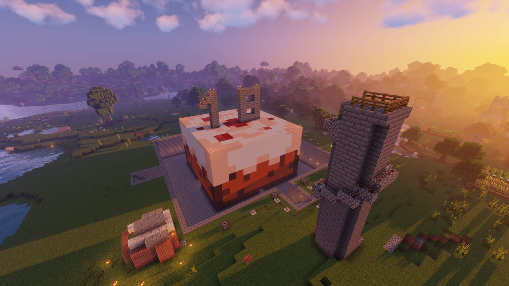
In what went down in history as the most stressful project to be undertaken in very limited time, this giant cake was erected to commemorate Simoa's adulthood on July 26, 2020. It was part of a greater project known as SBOXX (Simos Birthday Operation '20') and would have to be completed in a matter of 2 days by the server's founding members. Summer heat and exhaustion did not stop the two architects who spent countless hours working on this in order to ultimately dedicate it to Simoa. Inside the cake stands a lectern directing visitors to the gift, which was underneath Simoa's residence the whole time.
I could perhaps fix the incorrect floor some day but until then there exist no plans for the area besides its connection with the rest of the server via the KHN5 Nether Highways.
TRIVIA While the exterior has been designed with attention to detail, the inside floor is incorrect. There wasn't enough time to fix it, therefore the builders went on with it and improvised part of the floor to blend with what appears to be the correct pixels.
The "T" Mall
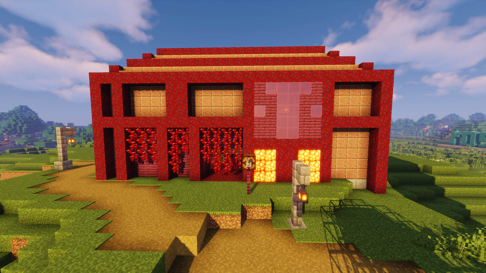
MJ's business started with a wooden kiosk outside his garden. When that closed, he began work on a shopping center on the top of a small hill near the garden. There, one may find a selection of common goods, from large quantities of wood and sand to obsidian and campfires. Everything in very reasonable prices. The crimson-colored mall received its named from the letter T that its architect designed on its facade.
The current plan is to complete the second floor of the mall.
Type: Shopping Center. Materials: Granite and Stems Height: 15 blocks
TRIVIA It was originally conceived as a butcher shop. Constant expansions to the set of offered materials led to a renovation of the building and reconsideration of the items it sells.
The Straw
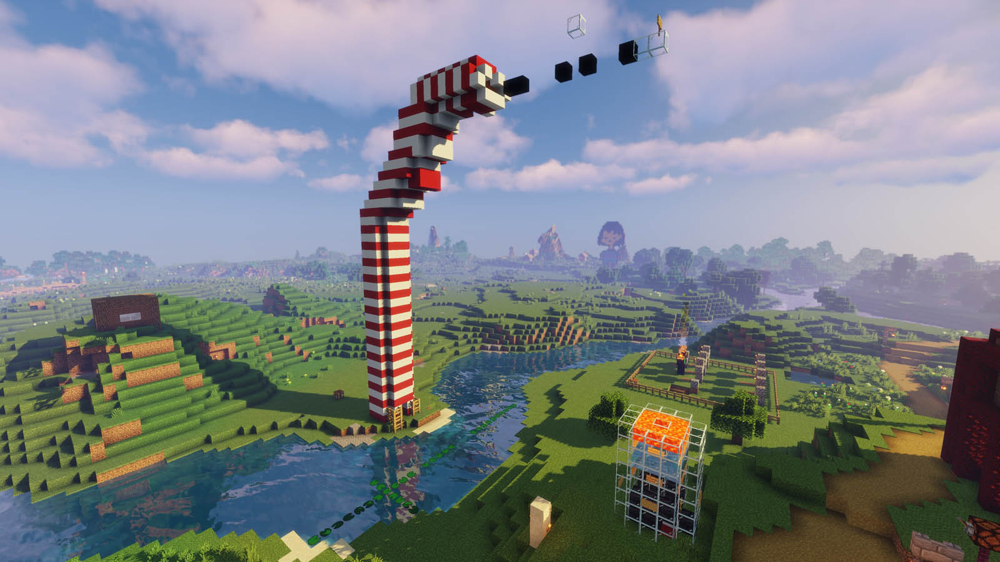
What started as a lighthouse opposite of the T Mall turned out to become a giant straw coming straight out of the earth and reaching the skies. MJ's creation features a small parkour platform on the top. Once one reaches the end of this platform they have to jump into a big glass of water, where they receive their trophy of gold blocks.
TRIVIA The blocks of gold were obtained from the Nether when we were heading off to build the SBOXX cake.
The Cathouse
MJ's wooden cathouse was built alongside the neighboring Straw. Although currently uninhabited, the plan is to have our cute feline pets relocated on this cozy environment where they can plot against mankind and the server as a whole without any distractions.
Type: Pet House. Material: Wood. Height: 15 blocks
TRIVIA We had zero idea what to do with it initially. MJ built it because it looked nice.
Cow Isle
In a distant area untouched by the light of loaded chunks lies an island inhabited by cattle. It all started when two ore-seeking travelers warped themselves from the abyss of hell onto this serene place. One of them began breeding the cows they found wandering around, thus creating a population that would later give its name to the island. Therein the two travelers started building a wooden cottage and invited the rest of the serverians for assistance. Creepers attempted to bombard the residence in several occasions and despite the unfortunate losses of our friends Dief, Chrysaphenia and Zacharenia, the house was eventually completed according to the plan.
Future plans for the area include an expansion of the cattle empire as well as the creation of buildings to worship the holy residents of the isle.
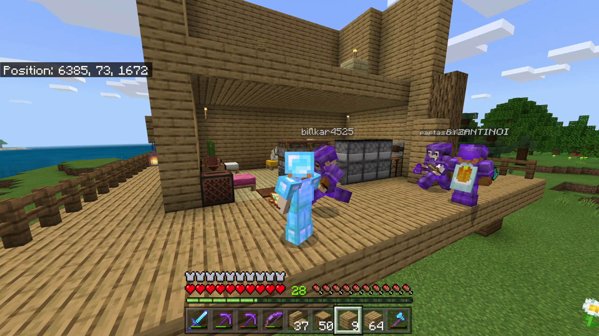
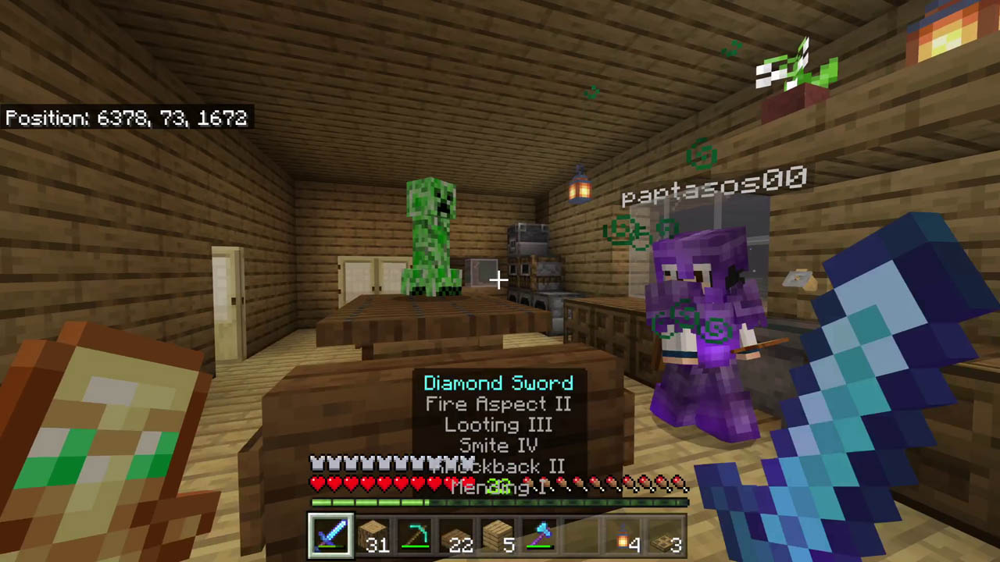
Type: Island. Size: isle-esque. Discovered: Aug. 3, 2020 @ 1:50 AM. Weather: warm and summery
TRIVIA Before the "Cow Isle" name was decided, it was proposed to be a Japanese-themed island. This idea was moved for another future project.
Mountain Quarry
Literally a gigantic hole in the ground.
The plan is to reach the bedrock level (as of the 1.16 height limit) and dig several interconnected branch mines around the walls.
Type: Quarry. Current depth: 33 blocks
TRIVIA It was designed significantly smaller and expanded during the digging process
Under Construction Nether Hub
Great envisioning has been done for this place. Be that as it may, it is currently an utter mess. Come back next year.
The greatest future plan is the KHN5 Nether Highways, a system of railroads for easy transportation around the vast land of KHN.
Type: Construction Site. Future Materials: Nether Bricks & Stems Current height: 43 blocks
TRIVIA The current framework is 8 chunks long and 8 chunks wide
KHN5 Industrial Area
Currently inexistent. All the automated farms initially placed where the aquarium will be shall be moved on that location (out of the need for more space and less lag on the Purpleshep/MJ mansion.)
Type: Redstone Facility / Auto-farms
TRIVIA At first it was internally known as "TGRF", standing for "Tasos Grand Redstone Factory". This idea is still planned to be incorporated inside the Industrial Area.
Idea boards
Just...idea boards.
A proposed plan is to unify them.
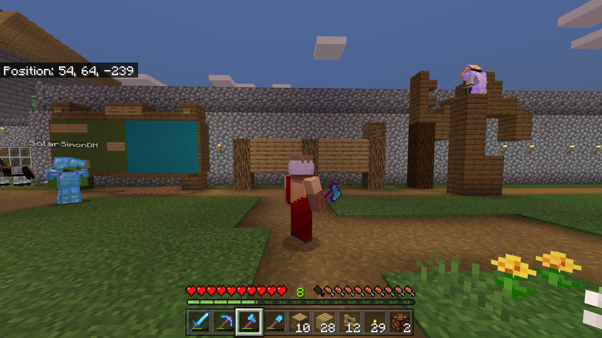
Type: Just idea boards.
TRIVIA We write ideas there.
Download Links
FAQ
Why do we spell it KHN but pronounce it as "keen"?